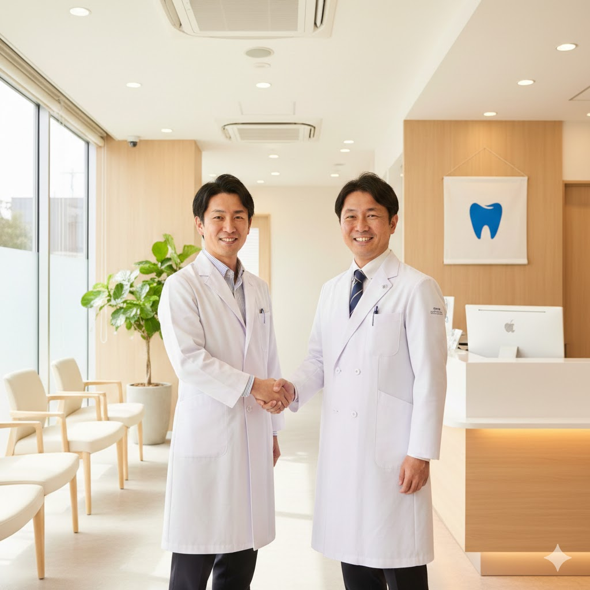

口腔外科専門医として12年。
開業支援・採用支援・SEO/MEO・Google広告・Web制作まで、
歯科医院経営のあらゆる課題を解決します。

代表の楢原は、現在も口腔外科医として週2日臨床に立っています。 現場の空気感、スタッフとの関係性、患者対応の難しさ—— すべてを理解した上で、経営課題に向き合います。
採用戦略の設計から求人原稿の作成、母集団形成まで。 「採用して終わり」ではなく、組織づくりの視点で定着・活躍までを見据えた支援を行います。
月1回のレポート報告ではなく、 日々のコミュニケーションを通じて課題を共有。 院長の「右腕」として、一緒に医院を成長させます。